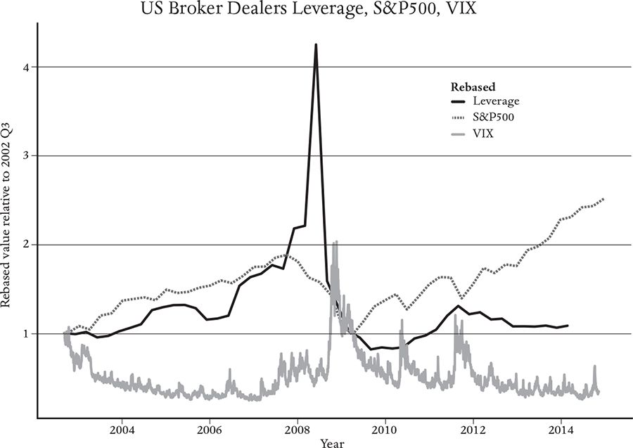

The most recent global financial crisis reminded the current generation of the lessons that their grandparents had learned in the Great Depression: The self-regulating economy does not always work as well as its proponents would like us to believe.
Providing credit, including loans, mortgages, bonds and credit cards, is one of the most important functions of the financial system. The details of contracts for offering credit vary, but the basic mechanism is the same: A lender temporarily provides money to a borrower. Credit is essential for the operation of the economy – people need it to buy houses, businesses need it to expand their operations – but it also introduces risks.
Credit connects us together by linking the balance sheets of borrowers and lenders. Contracts for the provision of credit form a vast network, with balance sheets as nodes, and links from lender to borrower. Borrowers often use more than one source of credit, lenders supply money to multiple borrowers, and the same agent can simultaneously both lend and borrow. The network of credit contracts is an important subset of the web of contracts. The credit network is also closely coupled with the rest of the economy. If the economy goes into a depression and you lose your job, you may be unable to repay your loans; if businesses can’t get credit, GDP suffers. Upheavals in the credit network are the main cause of recessions.2
The overextension of credit was a major cause of the 2008 financial crisis.3 When credit is used to buy assets, it’s called leverage. Buying assets with borrowed money may sound imprudent, but people do it all the time. Suppose you want to buy a home for $500,000 but you can’t pay the full price in cash. You take out a mortgage, putting 20 per cent down and borrowing $400,000 from the bank. Leverage is defined as the ratio of assets to equity. Thus, your leverage is now 5:1, since the value of the house (the asset) is five times the value of your equity (the 20 per cent down payment).4
The term leverage comes from a mechanical analogy to a lever. Just as a lever lets you apply a larger force than your limited strength allows, borrowing lets you buy more than your current assets permit. Most of us couldn’t buy a home without leverage. It is essential for businesses, which often need more resources than they can marshal with their own capital. But unlike mechanical leverage, which amplifies force in a straightforward way, financial leverage does more than just amplify profits and losses – it creates risk and can destabilize markets.
Leverage can be risky for both borrower and lender. Suppose that immediately after you buy your house for $500,000, its value drops by 10 per cent. You still owe the bank $400,000, but your house is now worth only $450,000. Your equity in the house is now $50,000, which means your leverage has increased to 450/50 = 9, nearly double what it was before. If the value of the house declines by another 10 per cent of the original price, to $400,000, your equity goes down to zero and your leverage becomes infinite. This is a good example of nonlinearity: The second 10 per cent drop drives leverage up infinitely more than the first. We will see later in this chapter how the strongly nonlinear nature of leverage is a powerful amplifier that can cause booms and busts in the economy.
Credit causes risk. To mitigate risk, lenders usually require collateral, which in the case of a mortgage is usually the house itself. As a result, when the value of your house drops, your loan becomes riskier for the lender. When many types of financial assets, such as stocks or mortgage-backed securities, are purchased using credit, to mitigate the cost of a potential default, the lender usually requires partial repayment of the loan if the leverage exceeds a certain threshold. In the financial world this is called a margin call. One way to raise cash to meet a margin call is to sell some of the asset. But if many investors do this, when asset prices drop, everyone sells at the same time, lowering prices, which triggers even more margin calls and more selling, creating a feedback loop that amplifies bad news. As we’ll see, sufficiently high leverage can cause bubbles and crashes to occur spontaneously for what might seem like no reason at all.
Margin calls lower the risk for an individual lender acting alone, but they increase systemic risk. In principle, it seems prudent for the lender to require a margin call; if only a few investors are using leverage, this helps protect the lender against default. But when too many investors use leverage, the collective effect of their actions can lead them all to default at the same time, causing prices to drop and thereby increasing the risk to the lender. Striking the right balance between individual risk and systemic risk is a key challenge for regulators. As we will discuss at the end of the chapter, some of the more progressive central banks are developing complexity-economics models to better understand how to design regulatory frameworks that take systemic risk into account.
In books and papers published in the 1970s, the Washington University Marxist economist Hyman Minsky postulated that, when markets are calm, competition drives investors to take on more leverage to increase their profits, which can cause a crash when conditions change. Minsky’s arguments were not expressed in mathematical terms, and they ran counter to prevailing views about market efficiency, so they were largely ignored at the time. They proved to be prescient for the 2008 financial crisis, when Minsky’s work suddenly became very relevant.
I learned a lot about leverage from my friend John Geanakoplos, whose pioneering work on leverage cycles shows how real-world experience can drive scientific discovery. John was a professor at Yale, but he was also a financial practitioner. His cousin, Mike Vranos, was Wall Street’s leading mortgage-backed securities trader at a now defunct firm called Kidder-Peabody. He arranged for John to join the firm as head of fixed-income research, where John invented new mathematical methods for pricing mortgage-backed securities. When Kidder folded (for unrelated reasons), Mike and John and four of their colleagues started Ellington Management Group, which quickly became the leading mortgage-backed-securities hedge fund.
John’s model for leverage was inspired by the near meltdown of the global financial system in 1998 because of the use of excessive leverage by a high-flying hedge fund called Long-Term Capital Management (LTCM), which was started by John Meriweather. LTCM’s board of directors included Myron Scholes and Robert Merton, both Nobel laureates for their work in finance. From its founding in 1994, through 1997, LTCM made remarkable returns that for two years exceeded 40 per cent. This was possible only because of their very high leverage. By 1998, they had $4.7 billion under management, but the size of their loan was an astounding $125 billion, meaning their leverage was about 25:1. To put this in perspective, with this much leverage it takes a loss of only 4 per cent (in their case $4.7 billion) to go bankrupt.
Their core strategy was a type of statistical arbitrage called convergence trading, which involves making bets on the spreads between interest rates on bonds, for example, by buying British bonds and selling American bonds. Their strategy was predicated on two assumptions: First, when differences in interest rates widen, they will eventually return. LTCM searched for pairs of bonds whose spreads were wider than their historical average. They would then buy the bond with the lower interest rate and short the bond with the higher interest rate (thereby betting that its price would come down), in order to make a profit when the interest rates eventually returned to normal. Their second assumption was that spreads between different bonds behave independently of each other.
Both of these assumptions unraveled in 1998. The problems began with the Asian financial crisis in 1997. Thailand, which had a booming economy and significant foreign debt, was forced to stop pegging its currency to the dollar, after which the Thai baht lost half its value, and the increase in foreign debt left Thailand bankrupt. The ensuing panic affected all of Southeast Asia, causing investors to lose faith in investing in developing countries, which in turn resulted in an economic slowdown throughout the developing world. It may also have contributed to the plummeting price of oil, which declined to what was then an historical low of $11 per barrel in November 1998. In the run-up to this, Russia defaulted on its bonds. The global investment community became nervous that more such problems might follow, causing a ‘flight to quality’ as investors rapidly moved their capital from risky bonds to safer bonds.
This caused many of LTCM’s positions to go bad at the same time. Safe bonds pay lower interest rates than risky bonds, so LTCM’s convergence strategy meant that across the board it was long on low, safer interest rates and short on high, riskier interest rates. The flight to quality drove the interest rates of safe bonds even lower and the interest rates of risky bonds even higher, so LTCM lost money across the board. The fact that LTCM had become so huge and so leveraged caused both of the assumptions underlying their strategy to be violated. As problems mounted, they made the problem even worse: when spreads widened, to make their margin calls they needed to unwind their positions; but as they did so, their market impact made the spreads even wider. Because they were invested globally, this happened everywhere, causing spreads throughout the world to widen in tandem.
LTCM lost $5 billion – the fund’s entire net worth – in only four months. Investors panicked: If the fund was forced to liquidate quickly, it would buy safe bonds and sell risky bonds, and spreads would widen even more.5 Virtually every major investment bank on Wall Street had money invested with LTCM, and many had made huge convergence bets of their own, so a rapid liquidation could have pulled down the entire global financial system. The Federal Reserve stepped in and organized a bailout, whereby LTCM’s major investors were pressured into purchasing it and winding it down slowly. As in the 2007 quant meltdown, this illustrates the importance of understanding market ecology, and is a good example of how leverage leads to systemic risk.
John’s firm, Ellington, also used leverage, but at reasonable levels: Where LTCM’s leverage was an astronomical 25, Ellington’s was only about 5. Ellington traded mortgage-backed securities, not bonds, and they were unaffected by the LTCM meltdown. However, one of Ellington’s prime brokers got nervous and suddenly asked for a margin call – an immediate repayment of the loan providing the leverage – allowing only one day for repayment. Ellington saved the firm and its investors with frantic trading and has used lower leverage since then. Perhaps even more important, they changed their contracts so that their lenders need to give six months prior notice before changing Ellington’s margins. This solved the real problem that had caused the margin call: Despite the fact that there were no problems with Ellington’s positions in the market, increasing nervousness led the lenders to demand more collateral (forcing Ellington to sell assets).
Inspired by these events, John quickly developed a theory for how leverage causes booms and busts. He did this in 2000, eight years before the 2008 financial crisis.6 Whereas Minsky simply presented the idea that waves of investor pessimism and optimism could influence borrowing and possibly cause a crash, John’s mathematical theory linked uncertainty, leverage and asset prices, and incorporated the important role of collateral. (John was unaware of Minsky.)
To put this in context, there is a highly influential theorem by Franco Modigliani and Merton Miller which suggests that leverage shouldn’t affect prices. Their theorem, formulated in 1958, is a classic result in economics, and says that the enterprise value of a firm should be unaffected by how it is financed. Enterprise value is a measure of fundamental value, not market price, and their theorem involves a long list of strong assumptions, including efficient markets, but it was widely interpreted to mean that leverage shouldn’t affect prices.7 The LTCM saga and Ellington’s experience made it clear that leverage could have a big effect on prices.
John designed a model to show how leverage can distort prices. His model is an equilibrium model with rational, profit-maximizing agents who trade an asset (like a stock or bond). The model is formulated in a three-step process; in between each step, information is revealed that can be ‘good’ or ‘bad’. There is a continuum of different agents, ranging from ‘optimists’, who have a prior belief that good information is more likely, to ‘pessimists’, who have a prior belief that bad information is more likely. Crucially, the agents are allowed to lend to each other.
In the first period, the model assumes markets are calm (meaning asset price volatility is low). The optimists borrow from the pessimists and buy as much of the asset as they can, pushing up its price.8 If good news is received, this situation persists, but if bad news is received, the price drops. One expects the price to drop due to bad news, but the leverage amplifies the drop for two reasons: First, the leveraged optimists lose more money from the initial price drop than the unleveraged pessimists. This decreases the optimists’ influence on the market, giving the pessimists a bigger role in setting prices, and forcing the asset price down. Second, and even more important, the uncertainty created by the news makes the lenders nervous, so they are not willing to lend as much. They lower the allowed leverage, forcing a margin call and preventing new buyers from borrowing nearly as much as the original buyers did to prop up the price. If bad news is received twice in a row, this causes the market to crash. John showed that the rise and fall in price goes hand in hand with the rise and fall in leverage, which in turn goes hand in hand with the fall and rise in uncertainty, in a process he called the leverage cycle. This demonstration of the dangers of leverage contradicted the prevailing wisdom at the time, but unfortunately the lesson was not absorbed in the build-up to the 2008 financial crisis.
On a broader level, John’s theory of the leverage cycle provides a great example of how institutional structure can cause market inefficiency, even with rational agents. If the agents were not allowed to lend, prices would match fundamental values. The combination of heterogeneous expectations and lending drives profits up, while pushing prices away from their fundamental value. Even if the market is informationally efficient (it is not possible for anyone to make excess profits), it can be far from allocational efficiency. This is not a tiny effect – as we saw in 2008, it can be a huge effect.
One summer day in 2003, a young professor from Vienna named Stefan Thurner knocked on the door of my office at the Santa Fe Institute. Stefan had abandoned a career as a clarinet player for particle physics. Then, toward the end of graduate school, he decided that particle physics was stuck and got his PhD in finance instead. He subsequently started the Complexity Science Hub in Vienna, which is now probably the second-largest complex-systems research center in the world (after the Santa Fe Institute).
Stefan wanted to make a financial model and asked me if I had any ideas. I had first heard about John’s theory of the leverage cycle at a talk he gave at SFI in 2001, and had been keen since then to make an agent-based model of the leverage cycle, so I suggested this as a good topic. We began a project that we would work on for a few weeks each summer when Stefan visited SFI, and during a long sailing trip we made in my boat, Eudaemonia, from Jacksonville, Florida, to Nassau, in the Bahamas. Since John G. was the inventor of leverage cycles and often visited SFI in the summer, as well as being a good friend, we pulled him into the collaboration.9
Stefan began programming a simple agent-based model. The idea was to do a complexity-economics version of John’s three-period equilibrium model to see what it would tell us. John had kept his model simple, so that he could solve it with pencil and paper. We wanted, instead, to make an agent-based model to study the dynamics of leverage cycles in an open-ended and more realistic manner.
As in many earlier agent-based models (see Chapter 9), traders had a choice between a stock and a bond. But, unlike in those models, the traders used leverage, and we only had value investors; there were no trend followers. As in John’s model, the value investors varied in their level of aggression (which had the same net effect as varying levels of optimism). The most aggressive funds bought the asset as soon as it was underpriced, whereas the less aggressive funds waited for more substantial mispricings. There were some other differences, but they’re not important here. What distinguished our model from earlier agent-based models of financial markets was the use of leverage.10 Our model contained a bank that could lend to the funds, but, as in real markets, there was a cap on leverage. If the leverage exceeded the cap, the funds were required to make a margin call and partially repay their loan to bring the leverage back under their limit.
We worked mainly in the summer, during Stefan’s annual visits, so it took several years and quite a bit of trial and error to fully develop the model. When the 2008 financial crisis began, we realized that our model was relevant to current events, and we kicked into gear, got the code working and produced some results. We had set things up so that we could turn the leverage up or down. Without leverage, the market behaved as one would expect under rational expectations. The price fluctuated, but remained close to the fundamental value. There was no clustered volatility, and no one ever defaulted. Even in runs spanning centuries of simulated time, the largest losses were less than 10 per cent.
However, as soon as we let the funds use leverage, everything changed. As we began raising the leverage limit, clustered volatility and fat tails appeared and grew stronger. There were periods when the market was reasonably efficient; using leverage, the funds could make bigger bets, which kept the price close to fundamental values. But, from time to time, there would be a crash, triggering a volatile period in which the market was inefficient and prices strayed significantly from fundamental values. The crashes could be very large, sometimes generating losses as high as 40 per cent, and many of the funds would default.11
The crashes were caused by margin calls. When at least one fund exceeded its leverage limit, generating the margin call, it depressed the price of the asset even further. This raised the leverage even more, requiring another margin call and causing other funds to make margin calls, and so on. The net result was that a little bad news could be enormously amplified by the market.
We weren’t too surprised by the big crashes; this is what we had been expecting. In John’s model, leverage cycles were implicitly viewed as rare events that resulted in large crashes. In ours, however, there were ‘crashes’ of all sizes, from frequent small price adjustments to rarer, large events. Furthermore, there were long calm periods punctuated by turbulent periods – in other words, clustered volatility. This, in turn, caused fat tails in price changes, matching real markets surprisingly well.
Our model showed that there are at least two possible causes of clustered volatility in financial markets. One cause is trend following, as in the Santa Fe Artificial Stock Market or the Brock and Hommes model described in Chapter 9, and the other is the excessive use of leverage, as in our model. Usually, both are active at once, but in extreme circumstances one cause or the other can dominate. The dot-com bubble was a quintessential case of a crash caused by trend following, and the big decline in stock market prices during the crisis of 2007–2008 was a classic example of a crash caused by excessive leverage.12
Upon reflection, these two mechanisms are more similar than they might appear. Both trend following and margin calls cause inverted demand functions. As noted, normally demand goes up as the price goes down and supply goes down as the price goes down; this makes the market stable. But, when there are trend followers or when there is a margin call, demand goes down as the price goes down. This causes selling into falling markets, which makes the market unstable, driving prices away from fundamental values, or in other words, causing the market to malfunction.
Given our model’s simplicity, its volatility dynamics were surprisingly realistic. Volatility in real markets follows a characteristic asymmetric pattern, consisting of sharp upward spikes followed by slow decay. Our model does something very similar, whereas standard mainstream models of volatility have much more symmetric profiles. Our model gave a good quantitative match to the empirical volatility profile.
One of the great values of agent-based models is that they can easily be used to test different policies. We brought in Stefan’s graduate student Sebastian Poledna as a collaborator, extended the model slightly to make it more realistic, and compared three different policies for risk control. Our baseline policy assumed a constant leverage cap, as described above. We also tested two other more sophisticated, supposedly superior policies, one in which the leverage cap depends on the recent volatility of markets (when volatility goes down, the leverage cap goes up, and vice versa) and another where banks require borrowers to buy options to offset the risk of possible defaults. We tested all three policies under comparable circumstances, counting the frequency of defaults under each policy.13
With low leverage caps, both of the more sophisticated risk policies were successful in reducing the frequency of defaults. But with higher leverage caps, the opposite happened: The sophisticated policies made things worse, because they caused the effective leverage cap to change based on recent volatility. If volatility increased, leverage caps went down. This caused even more selling into falling markets, amplifying downward price movements, increasing volatility, lowering leverage even more, causing more selling and so forth. As a result, there were crashes that would not have occurred under the simple policy where the required leverage remains constant.
Let’s reflect for a moment on how our agent-based model for leverage differs from a standard mainstream model. We determine prices in our model by matching supply and demand, so we do use the equilibrium assumption. But, in all other respects, this differs from a mainstream model. Our agents don’t maximize utility. Instead, they buy or sell according to simple heuristics that approximate what fundamental investors actually do: buy underpriced assets and sell them later. This behavior is directly observable, and is unlikely to change in light of new policies. Our investors are boundedly rational, which means their views are occasionally wrong. This is why prices can deviate substantially from fundamental values and why the market crashes. It is why the market is inefficient.
Our model illustrates the paradox of systemic risk. If only one small fund uses leverage, its effect on the market is small, and margin calls protect the lender by making sure that the leverage never goes too high. But if many funds use leverage, margin calls have a systemic effect on the market, increasing the risk of default and hurting the lender as well as the borrower. Systemic risk presents a major challenge to regulators because, by its very nature, it is an emergent property, dependent on the interactions of many different actors. This means that it cannot be understood by looking at each agent one at a time – it is essential to understand the behavior of the system as a whole. Agent-based models make it easier to understand systemic risk and test policies to control it.
Leverage played a central role in the financial crisis of 2008. Here are the highlights: The invention of a new type of financial instrument, mortgage-backed securities, allowed banks to bundle mortgages into standardized packages, to be bought and sold. This allowed banks to offload their risk to bigger institutions with more risk-bearing capacity. This seemed like a good thing for everyone: It was good for banks because it lowered their risk, allowing them to offer more generous mortgages, and good for low-income home buyers, because it allowed them to own homes and profit from the expected rise in prices. It also seemed good for the big financial institutions that bore the risk, because it allowed them to take on more leverage and increase profits. But in the end it was bad for everyone because mortgage-backed securities were priced on the assumption that the risk that any particular mortgage would default was independent of other default risks, whereas when things got bad, many households defaulted on their mortgages at the same time.14
Many consequences of this arrangement were unforeseen by most economists (who, after all, are only boundedly rational). As discussed in Chapter 4, mortgage-backed securities allowed banks to lower lending standards, which allowed more people to enter the housing market, which fueled a housing bubble. But this couldn’t go on forever; after a decade of rising house prices, the pool of potential new low-income buyers was exhausted. Therefore, housing prices had to come down, and when that happened many homeowners defaulted on their mortgage payments and the value of mortgage-backed securities plummeted.
Another side-effect of offloading risk using mortgage-backed securities is that it coupled the world’s financial institutions together more tightly than anyone realized. American mortgage-backed securities seemed like such a good deal that many banks and investors throughout the world bought them. The years leading up to the crisis were a period of quiet markets and steady growth. As a result, everyone was highly leveraged, so when mortgage-backed securities lost value, the portfolios holding them came under serious stress. A few financial institutions (like Lehman Brothers) collapsed or nearly collapsed and everyone quit lending. But because businesses depend on loans to keep the real economy going, this caused stock markets to drop precipitously and unemployment to skyrocket. Closing the loop, even more homeowners defaulted on their payments, and housing prices dropped further, stressing lenders and the economy even more.
To sum up, the crisis of 2008 was caused by a self-reinforcing feedback loop involving the interaction of housing markets, credit markets and the real economy. This feedback loop was not properly understood beforehand; though many pundits had predicted the housing bubble, very few of them predicted that its demise would cause a complete shutdown of credit (and hence a major recession). This was a failure to understand systemic risk.
Later in this chapter, we’ll discuss a simple model that captures an important aspect of the feedback loop between volatility and credit that drove the crisis, but first we need to understand something about the modern history of risk management.
We have to control risk, but risk management can have unintended systemic side-effects, and if these aren’t properly considered, the results can be disastrous. The organization that recommends standards for controlling risks in banking is the Basel Committee, which has representatives from all the G20 countries as well as important banking centers such as Singapore and Hong Kong. One of their principal recommendations concerns leverage. Starting in 1988, under what is now called Basel I, limits were mandated for bank leverage.15 The size of the leverage caps varied based on the asset and could change from time to time.
Between 1991 and 1999, when I was at Prediction Company, conventional wisdom about risk control evolved substantially. In 1991, most firms managed risk by using fixed limits on leverage, even if they didn’t explicitly follow Basel I. Even at the time, it was obvious that this method suffered from several problems.
The first problem was that the riskiness of assets can change due to clustered volatility. An asset whose price hardly moves, and so seems quite safe, might suddenly become volatile and therefore much riskier. Assigning risk based on face value does not automatically adapt to changing conditions and requires monitoring and manual adjustment.
The second problem is that price movements of assets are correlated. Positively correlated assets tend to move together, while negatively correlated assets move in opposite directions. A portfolio of positively correlated assets is riskier than a portfolio of negatively correlated assets. Such correlations mean that the risk depends on the whole portfolio and cannot be managed correctly on an asset-by-asset basis. Asset-specific fixed-leverage caps cannot take this into account.
The third problem occurs for trading strategies that hedge risks by short-selling (which produces profit if an asset drops in price). Fixed-leverage caps fail to take the resulting risk into account; again, risk needs to be managed at the level of the whole portfolio.
Because of all these problems, in the 1990s most firms abandoned fixed-leverage caps for a method called Value-at-Risk or VaR. This involves managing risk at the level of the portfolio, based on the probability of a loss of a given size. For example, on a daily scale, a 5 per cent VaR of $1 million means that 5 per cent of the time (that is, one day out of twenty) you should expect to take a loss of $1 million or more. VaR tracks volatility; if the estimated volatility increases, VaR increases, and vice versa.
In theory, VaR solves all three of the problems raised above, and it initially seemed like a big improvement over fixed-asset-level leverage caps. Volatility is far more predictable than the direction of price movements, and while volatility forecasts aren’t perfect, they’re pretty good under normal conditions (though of course it is the surprises that cause problems). Since VaR rises and falls with volatility, this makes risk control dynamic – that is, the suggested leverage varies based on market conditions. Under VaR, as volatility goes up, leverage goes down, and vice versa.
In 2004, the Basel committee implemented a new set of recommendations called Basel II, which, among other things, specified VaR as the standard for risk control.16 This was by then accepted wisdom in the financial community. From the point of view of an individual institution, it makes good sense. When volatility is high, things are riskier than normal, so it’s appropriate to use less leverage. Similarly, if volatility is low, it should be safe to use more. What could be wrong with that?
There were a few voices in the wilderness, such as Charles Goodhart and his collaborators, who worried that Basel II might have dangerous side-effects.17 As we’ll see, their concerns were valid.
The 2008 financial crisis was complicated, but some of its essential elements can be captured in a simple agent-based model. This model suggests that the crisis was in part caused by misunderstanding the systemic risk inherent in Value-at-Risk. We’ll see how a simple model of risk management, using the procedure recommended by Basel II, can lead to an endogenous leverage cycle, with a long, slowly building boom followed by a precipitous crash. This happens even without any shocks from the outside world, and provides a good example of how bounded rationality (based on widely used heuristics) leads to a chaotic attractor with endogenous dynamics.
The role of leverage in the crisis is illustrated in Figure 12, which shows the evolution of three important market indicators from 2002 to 2015. The S&P 500, a weighted index of the largest 500 US stocks, represents the stock market. In the period leading up to the crisis, the S&P index rose steadily from a trough of 776 in October 2002 to a peak of 1,565 in October 2007, then plummeted to 677 in March 2009, a level only 43 per cent of its value at the peak and lower than its value in 2002. Such a large drop in the market capitalization of US companies reflected larger problems with the national economy, and was one of the main symptoms of the crisis. Remarkably, as the stock market was climbing before the crash, the volatility of the S&P index steadily dropped by more than a factor of 3, reaching its trough in January 2007. (This is represented by the VIX, an index of stock volatility based on options prices.) Though still low, volatility then rose slowly until it spiked in August 2008, reaching a level nearly twice as high as its starting point.

US broker-dealers exhibited the most dramatic behavior of all. A broker-dealer is an institution that trades both for its customers (acting as a broker) and for its own account (acting as a dealer). Most of the investment banks that played central roles in the crisis, such as Lehman Brothers and Bear Stearns, had broker-dealers using leverage. Broker-dealer leverage steadily climbed alongside the S&P index between 2002 and 2007, rising by roughly the same amount. When the S&P index started to fall, leverage climbed dramatically, spiking sharply upward at the beginning of 2008 and reaching a peak nearly four times its 2002 level. It then plummeted just before volatility spiked. Leverage continued to drop, so that in 2009 it was lower than it had been in 2002.
Were the movements of these indicators unconnected, or did they have causal relationships that give insight into the crisis? John G.’s model suggested they were connected; ours, however, provides an even simpler explanation that helps us understand not just the crash, but the build-up to the crash.
The model we built to answer these questions was developed by Christoph Aymanns, my first graduate student at Oxford. He had a master’s degree in physics from Imperial College in London, where he was nearly top of his class, and then went to work at McKinsey & Company for a year before coming to Oxford. The research we did was supported by a large grant from the European Union, whose projects are identified by acronyms. Ours was CRISIS, which stood for Complexity Research Initiative for Systemic InStabilities. I was scientific coordinator for this complicated grant, which involved eleven institutions spread across seven countries and was not easy to manage. One of our goals was to make a comprehensive model of a financial system so that we could test policies for averting crises.
Christoph and I set out to model how investment banks use leverage and how this affects prices. We began by building an artificial economy – an agent-based model with a financial system consisting of several investment banks and a few assets, and a simplified real economy that had production, labor and consumption. Then Christoph began playing with the model to see what it did.
Initially, the simple artificial economy we built was unregulated – that is, we didn’t impose any risk-control measures on the banks, nor did they impose any on themselves. We just gave them an initial endowment of assets, which we let them buy and sell. They could use leverage in a completely unregulated way, which we called passive leverage. An example of the behavior of the stock market under passive leverage is shown in the top panel of Figure 13.
Over short time spans, the stock-market index varied in a random-looking way. While this resembles a real stock market, such behavior is not viable in the long run. The artificial banks in our simulation were using leverage and taking risks. In the absence of any risk control, they would eventually take risks that were too high, and they would fail.
To manage their risk, we imposed the Basel II regulations. This raised and lowered their leverage limits based on the stock-market volatility. The behavior of the economy changed dramatically, as seen in the lower panel in Figure 13, labeled active leverage. The stock-market index began to oscillate! During each oscillation, prices slowly rose and then abruptly crashed, before the cycle repeated itself. The oscillations varied in period and amplitude, but the basic pattern was clear. For reasons that were initially mysterious to us, the act of imposing risk control under VaR had completely altered the behavior of the market. We had imposed no shocks from outside the system; the market was making its own booms and busts, apparently for no reason at all.